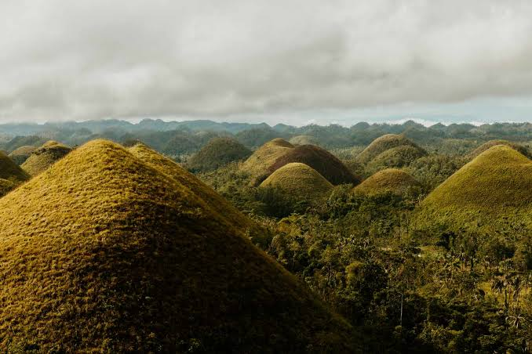
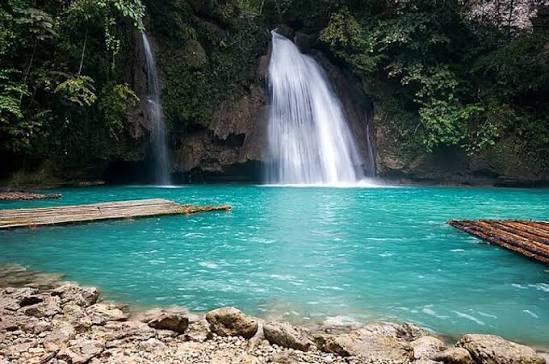
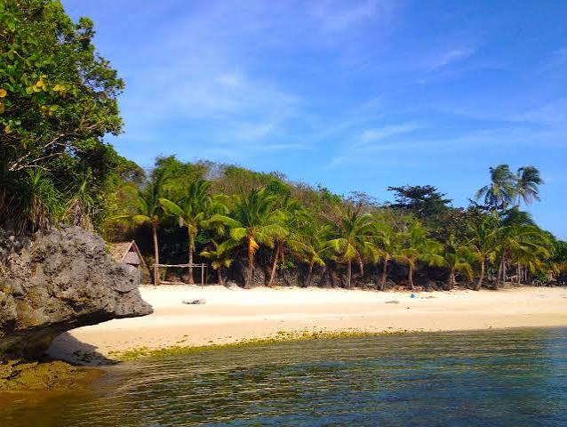

Boracay
Famous for its white-sand beaches, clear waters, and lively nightlife.

Chocolate Hills
Hundreds of unique hills that turn brown in the dry season.

Kawasan Falls
Turquoise waterfalls surrounded by lush forest.

Kalanggaman
Known for its long white sandbars and clear waters.

Guimaras
Known for its long white sandbars and clear waters.